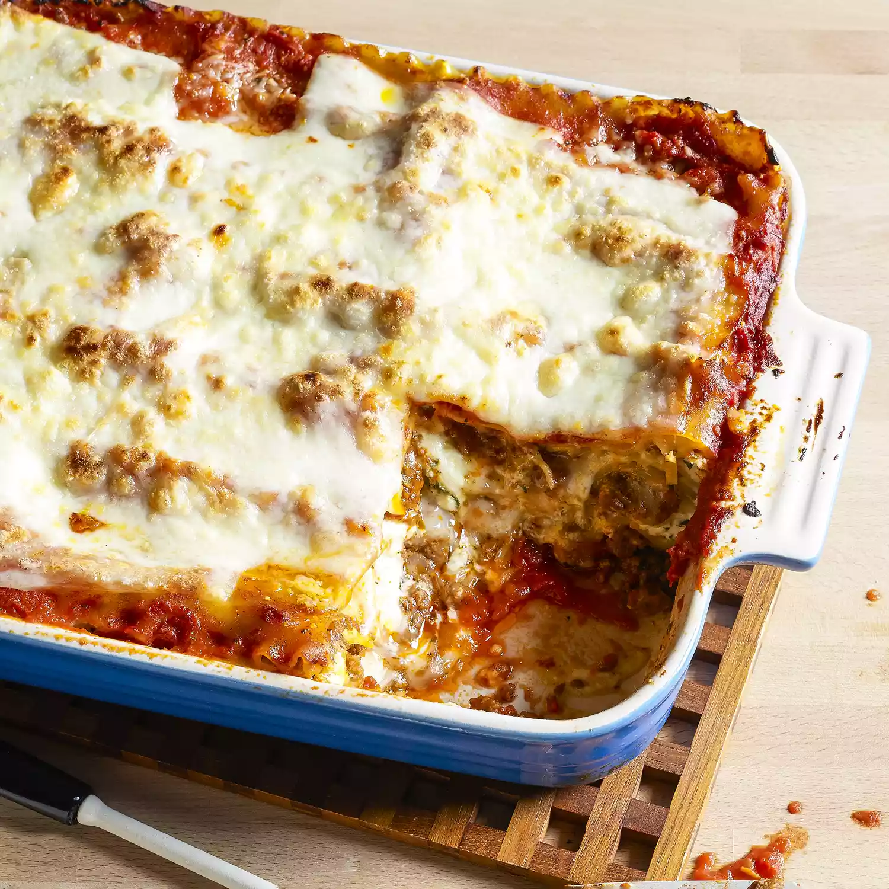

The Worlds Best Lasagna

This lasagna recipe takes a little work, but it is so satisfying and filling that it's worth it!
Amazing recipe! Always requested from my family. I don't care for ricotta cheese so I substitute with cream cheese, so good!
Ingredients
- 1 pound sweet Italian sausage
- 1 pound lean ground beef
- 1/2 cup minced onion
- 2 cloves garlic, minced
- 1 (28 ounce) can crushed tomatoes
- 2 (6 ounce) cans tomato paste
- 2 (6.5 ounce) cans canned tomato sauce
- 2 tablespoons white sugar
- 1 1/2 teaspoons dried oregano
- 1 teaspoon dried basil
- 1 teaspoon fennel seeds
- 1 teaspoon salt
- 1/4 teaspoon ground black pepper
- 4 tablespoons chopped fresh parsley
- 12 lasagna noodles
- 1 pound mozzarella cheese, sliced
- 1/2 pound provolone cheese, sliced
- 1/2 pound Parmesan cheese, grated
- 1/2 cup grated Parmesan cheese
Directions
- Preheat oven to 350 degrees F (175 degrees C). Lightly grease a 9x13 inch baking dish.
- In a large skillet, cook the sausage, ground beef, onion, and garlic over medium heat until well browned. Drain off fat, and stir in the tomatoes, tomato paste, tomato sauce, sugar, oregano, basil, fennel seeds, salt, pepper, and parsley. Simmer, uncovered, for at least 1 hour, stirring occasionally.
- Spread 1 cup of meat sauce in the bottom of the prepared baking dish. Arrange 4 noodles over the sauce, and top with 1/3 of the mozzarella cheese, 1/3 of the provolone cheese, and 1/3 of the Parmesan cheese. Repeat layers twice. Top with remaining 4 noodles, meat sauce, and Parmesan cheese.
- Bake in preheated oven for 1 hour. Let stand for 15 minutes before serving.